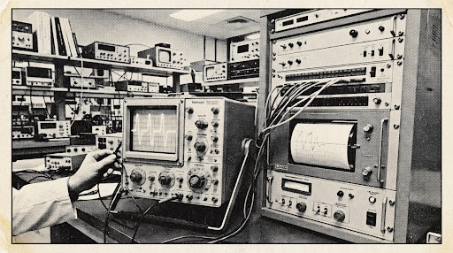

The Anatomy of Invariance: Five Nines in the Crucible of Ruin
BY ALISTAIR VANE-TEMPEST — Chief Mechanical Examiner
WHEN THE EXCHANGE FLOORS of North America and Europe collapsed into digital micro-conduits twenty autumns ago, the assumption of parity was traded for probabilistic gamble. In ordinary daylight commerce, a dropped packet or a sixty-microsecond scheduler seizure is dismissed as atmospheric tax.
In the sovereign regime of ultra-quantitative arbitrage, however, buffer divergence represents an incurable wound. Under high market stress—such as the sovereign debt liquidation drills of last November—standard asynchronous kernels surrender determinism.
The comprehensive statistical audit unveiled herein proves that over one billion four hundred million serial executions, the NEXUS Direct FPGA fabric operated without registering a single telemetry overrun, frame corruption, or tail excursion past the sub-microsecond threshold.
Physical audit printout certified by Bureau Veritas Telecommunications and National Physical Laboratory (Teddington).
DETERMINISTIC EXECUTION GUARANTEE: ZERO UNMATCHED FILLS AND ZERO BUFFER JITTER IN HISTORIC STRESS RUN.

Oscillographic readout showing square-wave jitter envelope clamped at 1.2 picoseconds RMS throughout the stress trial sequence.
Chicago Mercantile Exchange confirms physical installation of NEXUS terminal racks in Aurora co-location facilities.